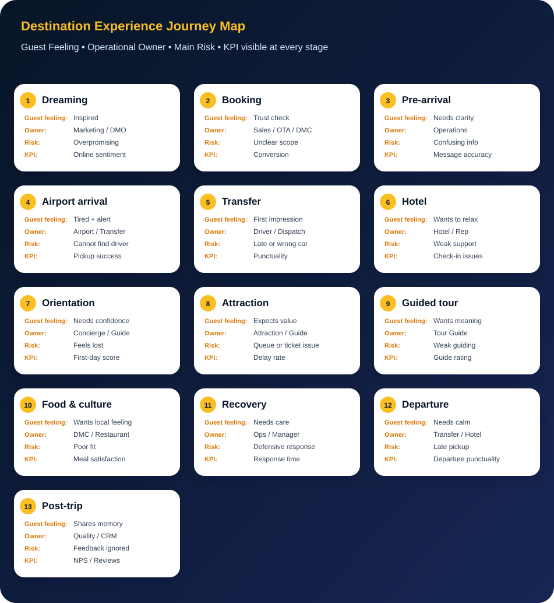

Flagship article for destination experience
A practical long-form article built around Abu Dhabi destination operations, guest journey mapping, tour guide quality, dispatch planning, service recovery and pricing discipline.
Introduction: Destination experience is not theory. It is what the guest feels.
After more than 10 years in tourism operations, guiding, guest handling, reservations, transfers, supplier coordination, and destination service delivery, I learned one important lesson:
Destination experience is not created only by attractions. It is created by the full journey.
Related reading: For the people layer inside that journey, read Tourism Operations Roles. For the guide-quality layer, continue with Tour Guide Quality Index.
A guest does not separate the airport, driver, hotel, attraction, guide, travel desk, DMC, restaurant, or departure transfer. For the guest, everything becomes one story.
If the airport arrival is smooth, the pickup is clear, the driver is professional, the hotel check-in is simple, the attraction visit is well managed, the guide is prepared, and problems are solved quickly, the destination feels organized.
But if the guest is confused at the airport, the pickup message is unclear, the vehicle is late, the guide is not briefed, the ticket is wrong, or the team responds badly to a complaint, the destination experience becomes weak — even if the attraction itself is beautiful.
This is why destination experience should not be treated as one department or one service. It should be managed as a complete journey map.
Marketing may bring the guest to the destination.
Operations decides what the guest will remember.
What is destination experience?
Destination experience is the complete feeling a visitor has across all touchpoints before, during, and after visiting a destination.
It includes the visible moments, such as attractions, hotels, airports, restaurants, and guided tours. But it also includes the invisible operational details behind the scenes: pickup planning, driver briefing, ticket accuracy, attraction timing, communication, emergency response, and service recovery.
In simple words:
Destination experience is the gap between what the destination promises and what the visitor actually feels.
A destination can promise luxury, culture, adventure, family comfort, or world-class entertainment. But if the operational journey is confusing, the promise becomes weaker.
This is why destination experience needs both strategy and execution. It needs destination marketing, but also transport planning. It needs beautiful attractions, but also queue management. It needs digital platforms, but also human communication. It needs customer service, but also operational discipline.
What is a Destination Experience Journey Map?
A Destination Experience Journey Map is a practical tool that follows the guest from the first inspiration stage until the final memory after departure.
It helps tourism teams understand:
| Question | Why it matters |
|---|---|
| What does the guest expect? | Expectations shape satisfaction before the service starts. |
| What does the guest feel? | Emotions influence reviews and recommendations. |
| Where can confusion happen? | Confusion creates stress and complaints. |
| Who owns each touchpoint? | Clear ownership prevents operational gaps. |
| What should be measured? | If it is not measured, it is difficult to improve. |
| How can the experience be improved? | Journey mapping should lead to action, not only reports. |
A strong journey map does not look only at the beautiful parts of tourism. It also looks at the operational details that guests may not see directly but always feel.
Was the pickup time realistic?
Was the driver briefed correctly?
Did the guest receive the correct meeting point?
Was the attraction ticket valid?
Was the guide prepared for delays?
Was there a backup plan if an attraction closed?
Was the departure transfer confirmed?
These details may look small inside the office, but for the guest, they are the experience.
Destination Experience Journey Map
This visual summarizes the visitor journey from the first destination promise to the final memory. Every stage connects four practical questions: what the guest feels, who owns the touchpoint, what risk may appear, and which KPI should be watched.

The complete Destination Experience Journey Map
| Stage | Guest question | Main risk | Best operational action | KPI |
|---|---|---|---|---|
| Dreaming | Is this destination worth visiting? | Overpromising | Align marketing with real delivery | Online sentiment |
| Booking | Can I trust this provider? | Unclear scope | Clear quotation and confirmation | Booking conversion |
| Pre-arrival | Do I know what to do? | Confusing information | Send practical timed messages | Message accuracy |
| Airport arrival | Who is meeting me? | Guest cannot find driver | Exact meeting point and contact | Pickup success rate |
| Transfer | Is this destination organized? | Late or poor vehicle | Driver briefing and vehicle matching | Transfer punctuality |
| Hotel | Can I relax now? | Weak arrival support | Coordinate guest arrival notes | Check-in issue rate |
| Orientation | Can I move confidently? | Guest feels lost | Simple first-day guidance | First-day satisfaction |
| Attraction | Was it worth it? | Tickets, queues, timing | Entry plan and meeting point | Attraction delay rate |
| Guided tour | Do I understand the place? | Weak guiding | Guide briefing and route control | Guide rating |
| Food & culture | Did I feel local connection? | Poor restaurant fit | Match meal stop to guest profile | Meal satisfaction |
| Recovery | Does anyone care? | Defensive response | Acknowledge, solve, follow up | Complaint response time |
| Departure | Will I leave smoothly? | Late transfer | Flight, terminal, and buffer check | Departure punctuality |
| Post-trip | Would I recommend it? | Feedback ignored | Review analysis and improvement | Review score / NPS |
Case study: Abu Dhabi as a destination experience journey
For me, Abu Dhabi is one of the best practical examples to explain destination experience because the visitor journey is not based on one attraction only. It is a combination of culture, islands, museums, hotels, beaches, events, family attractions, religious landmarks, luxury experiences, and city logistics.
A typical Abu Dhabi visitor journey may include:
Airport arrival.
Hotel check-in.
Yas Island or Saadiyat stay.
Sheikh Zayed Grand Mosque visit.
Qasr Al Watan.
Louvre Abu Dhabi.
Corniche photo stop.
Theme parks.
Desert experience.
Shopping.
Dining.
Departure transfer.
This type of destination journey needs coordination. A guest may love Sheikh Zayed Grand Mosque but still feel frustrated if the dress code was not explained. A guest may enjoy Louvre Abu Dhabi but still complain if ticketing was not clear. A family may enjoy Yas Island but feel stressed if pickup timing, child seats, luggage, and drop-off details were not managed properly.
This is why Abu Dhabi is a strong case for destination experience. It has powerful attractions, but the visitor journey depends on how well all touchpoints connect.
The official Experience Abu Dhabi platform already supports this idea by organizing visitor information around things to do, places to go, events, trip planning, dining, maps, and mobile app support. For operators, DMCs, guides, hotels, and transport teams, the next step is to translate this destination information into smooth operational delivery.
The lesson is simple:
Abu Dhabi does not only need strong attractions. It needs strong journey coordination around those attractions.
Practical Abu Dhabi journey example
Imagine a French-speaking family visiting Abu Dhabi for the first time.
They arrive after a long flight. They are tired, carrying luggage, checking WhatsApp, looking for the driver, and thinking about the hotel. The next day, they have a city tour including Sheikh Zayed Grand Mosque, Qasr Al Watan, Corniche, and Louvre Abu Dhabi.
The itinerary looks simple on paper.
But operationally, many details can affect the experience.
| Touchpoint | What can go wrong | Impact on guest | Better approach |
|---|---|---|---|
| Airport arrival | Driver location unclear | Stress at first moment | Exact meeting point and driver contact |
| Transfer | Vehicle too small for luggage | Poor first impression | Match vehicle to pax and luggage |
| Hotel | Early arrival not prepared | Guest frustration | Coordinate early check-in options |
| Mosque visit | Dress code not explained | Entry delay or embarrassment | Send dress code before tour |
| Attraction tickets | Wrong ticket type | Waiting and complaint | Verify tickets before departure |
| Guide briefing | Guide lacks guest profile | Weak personalization | Share language, family, timing, interests |
| Lunch stop | Restaurant not suitable | Lower value perception | Match restaurant to guest profile |
| Drop-off | Wrong sequence | Long travel time | Plan drop-off logically |
| Departure | Driver late | Flight anxiety | Confirm pickup buffer and terminal |
This is destination experience in real life.
It is not only the destination itself. It is how the destination is delivered.
Stage 1: Dreaming and expectation
The journey starts before the visitor books.
A visitor may discover the destination through social media, travel agencies, tourism campaigns, YouTube, Google, influencers, friends, or online reviews. At this stage, the destination is creating a promise.
If the destination presents itself as luxury, the guest expects smooth service. If it presents itself as family-friendly, the guest expects comfort and safety. If it presents itself as cultural, the guest expects respectful interpretation and meaningful stories.
The risk is overpromising. Marketing can create desire, but operations must deliver reality.
Practical action: Destination teams should regularly compare marketing messages with real visitor feedback. If the campaign says “seamless experience,” then pickup, ticketing, signage, attraction flow, and service recovery must also feel seamless.
Stage 2: Booking and quotation
Booking is not only a transaction. It is the first trust moment.
This is where pricing and destination experience connect.
A weak quotation can create future service problems. If transport cost, guide fees, attraction tickets, VAT, gratuities, waiting time, child policy, cancellation rules, and operational buffers are not clear, the delivery team may face pressure later.
A good quotation does not only show price. It sets expectations.
It answers:
What is included?
What is excluded?
What is the pickup time?
What is the vehicle type?
What are the ticket rules?
What is the child policy?
What happens if the attraction is closed?
What is the cancellation policy?
This is why pricing discipline is part of destination experience.
| Pricing topic | Connection to experience |
|---|---|
| Fixed and variable costs | Prevents unrealistic selling prices |
| Participant estimation | Avoids weak group planning |
| Break-even risk | Protects profitability and delivery |
| Tour cost worksheet | Helps operations understand cost structure |
| Transport, tickets, VAT, gratuities | Prevents hidden surprises |
| Professional quotation | Sets expectations before arrival |
| Markup and selling price | Keeps pricing sustainable |
Bad pricing creates bad operations. Bad operations create bad experience.
Stage 3: Pre-arrival communication
After booking, many operators make a mistake: they confirm the service and then disappear until the travel date.
But the guest still has questions.
Where is the meeting point?
What should I wear?
Can I bring luggage?
Is the mosque open?
Do I need ID?
Will the driver speak English?
What if my flight is delayed?
Is the tour suitable for children?
Pre-arrival communication should reduce anxiety. It should not be too long, but it should be useful.
Wrong message
“Your tour is confirmed.”
This is too weak.
Better message
“Your Abu Dhabi city tour is confirmed for tomorrow. Pickup is at 09:00 from the hotel main lobby. Please be ready 10 minutes earlier. For Sheikh Zayed Grand Mosque, modest dress is required. Your guide will meet you in the lobby and the emergency contact number is below.”
This message is simple, human, and useful.
Stage 4: Airport arrival
Airport arrival is the first physical impression. The guest is tired, alert and sensitive to confusion, so this is not the moment for vague communication. It is also the moment where the airport representative, transfer guide, sign man, gate man or driver can protect the first impression of the whole destination.
Common mistake
“Driver is waiting outside.” Outside where? Which terminal? Which door? Which meeting point? For a tired guest, this message creates more questions than confidence.
Better response
“Your driver is waiting at Terminal 1 Arrivals, near the meeting point sign, holding a board with your name. I am sharing the driver’s number now. Please message us if you cannot find him within five minutes.”
This is not only better communication. It is better experience design. The arrival transfer is not just transportation; it is the first welcome.
The field roles around airport arrival are critical. The transfer guide, sign man, gate man, airport representative and driver reduce confusion before it becomes a complaint. This connects directly with the related article: Tourism Operations Roles: The Real Difference.
Stage 5: Transfer and dispatch planning
A transfer is often treated as logistics, but for the guest, it is part of the destination experience.
The driver is the first destination ambassador outside the airport.
The vehicle, greeting, cleanliness, driving behavior, route, and communication all shape the guest’s first impression.
This is where dispatch planning matters.
A good dispatch plan should include:
Guest name.
Pickup location.
Drop-off location.
Flight or hotel details.
Passenger count.
Luggage count.
Child seat requirement.
Driver details.
Guide details.
Route notes.
Emergency contact.
Delay protocol.
This is also where tools like InfraDispatch become relevant. Pickup and drop-off planning is not only about assigning vehicles. It is about protecting the guest journey.
If pickup timing is wrong, the guest starts the day stressed. If the driver is not briefed, the operation becomes messy. If the pickup order is not logical, guests waste time. If drop-off is not confirmed, the final impression becomes weak.
Stage 6: Hotel arrival and first orientation
The hotel becomes the guest’s temporary home. After a flight and transfer, the guest wants to relax.
The guest needs basic confidence:
Where is breakfast?
What is the Wi-Fi?
Where can I eat nearby?
What time is tomorrow’s pickup?
How can I get a taxi?
What should I do today?
A hotel cannot always make the room ready early, but it can always manage the guest emotionally.
Weak response
“Check-in time is 3 PM.”
Better response
“Your room is being prepared. You can leave your luggage here, use the lounge, and we will update you as soon as the room is ready. Your tour pickup tomorrow is confirmed from the main lobby.”
Same policy. Different feeling.
This is destination experience.
Stage 7: Attraction experience
Attractions are often the reason people travel, but an attraction is not judged only by beauty.
The guest judges the full flow:
Access.
Ticketing.
Queue.
Entrance.
Staff.
Toilets.
Signage.
Interpretation.
Crowd control.
Photo stops.
Exit.
Transport pickup after the visit.
A famous attraction can still create a weak experience if the operation around it is poor.
For example, a guest may love the architecture of Sheikh Zayed Grand Mosque but become frustrated if dress code, timing, meeting point, or group flow is not explained. A guest may enjoy Louvre Abu Dhabi but feel unhappy if the ticket does not scan or the bus meeting point is unclear after the visit.
Weak response
“The attraction was busy. Nothing we can do.”
Better response
“Today the attraction is busier than usual. We will adjust the visit flow, use this meeting point, and update the next stop timing by 15 minutes.”
The difference is not only the problem. The difference is how the team manages the problem.
Stage 8: Guided experience
A tour guide is not only a storyteller.
A strong guide is a frontline experience manager.
The guide manages timing, guest emotion, cultural explanation, safety, rules, group movement, photo stops, driver coordination, and service recovery.
A guide notices what the office cannot see.
The guest is tired.
The children need a break.
The family wants shorter explanations.
The VIP guest needs privacy.
The group needs a toilet stop.
The driver is parked too far.
The attraction is crowded.
The guest is confused about local customs.
This is why Tour Guide KPIs should measure more than knowledge.
| Guide KPI | Why it matters |
|---|---|
| Punctuality | Protects the journey timing |
| Communication | Reduces guest confusion |
| Storytelling | Creates emotional connection |
| Cultural awareness | Prevents misunderstanding |
| Flexibility | Helps when plans change |
| Driver coordination | Keeps movement smooth |
| Service recovery | Protects satisfaction during problems |
| Guest feedback | Shows real experience quality |
A guide can save a weak operation, but a weak operation can also damage a good guide. Both must work together.
Stage 9: Clear roles in tourism operations
Destination experience becomes weak when roles are unclear.
A tour guide, tour leader, transfer guide, sign man, gate man, excursion guide, hotel representative, and travel desk agent do not all have the same responsibility.
If roles are confused, guests receive mixed messages. If roles are clear, the journey becomes smoother.
| Role | Main responsibility | Experience impact |
|---|---|---|
| Tour Guide | Interpretation, storytelling, group handling | Creates meaning and engagement |
| Tour Leader | Group supervision and journey control | Keeps the full program organized |
| Transfer Guide | Arrival/departure support | Reduces airport and transfer confusion |
| Sign Man | Meeting point visibility | Helps guests find the right contact |
| Gate Man | Entry control and group flow | Prevents crowd and access issues |
| Hotel Representative | Guest support at accommodation | Gives daily confidence |
| Travel Desk Agent | Selling, explaining, confirming | Sets expectations before service |
Clear roles reduce confusion. Clear roles protect the guest journey.
Stage 10: Food, culture, and emotional memory
Food and culture are powerful because they create emotional memory. A guest may forget the exact timing of the tour, but they remember a kind waiter, a good local meal, a beautiful coffee stop, or a cultural moment explained well by a guide.
Food experience still needs planning. It should support the journey, not interrupt it.
| Planning question | Why it matters |
|---|---|
| Does the restaurant match the guest profile? | A family, VIP group, cultural group and budget group may need different meal choices. |
| Is there enough time? | A rushed meal creates stress and may delay the next attraction. |
| Are dietary needs respected? | Ignoring dietary requirements can quickly become a service failure. |
| Is the menu clear? | Clear menus reduce confusion, especially for multilingual groups. |
| Is the location convenient? | A good restaurant in the wrong location can damage the route timing. |
| Is the experience authentic? | Culture should feel real, comfortable and respectful, not forced or overly commercial. |
For destination experience, culture should feel human and well-organized. The best cultural moments are the ones that feel natural, local and easy for the guest to enjoy.
Stage 11: Service recovery
No destination is perfect.
Flights delay. Attractions close. Weather changes. Vehicles face traffic. Guests get sick. Tickets sometimes have issues. Groups may be late.
The real test is not whether a problem happens. The real test is how the team responds.
Worst response
“It is not our fault.”
This damages trust immediately.
Better response
“We understand the inconvenience. The attraction has changed the entry process today. We are arranging the fastest available solution and will update you again in 10 minutes.”
Good service recovery has six steps:
| Step | Action |
|---|---|
| 1 | Acknowledge the issue |
| 2 | Apologize professionally |
| 3 | Explain clearly |
| 4 | Offer a solution |
| 5 | Give a time update |
| 6 | Document and follow up |
In tourism, the guest may forgive the problem. But they rarely forgive silence, blame, or careless communication.
Stage 12: Departure and final farewell
Departure is often underestimated. Many teams focus heavily on arrival and tours but forget the final transfer. This is dangerous because the final memory can influence the review.
The airport representative, transfer guide, gate man, hotel representative or driver may be the last human contact before the guest leaves the destination. If this touchpoint is calm and accurate, the journey feels complete. If it is confused, even a good trip can end with stress.
| Departure control point | Why it matters |
|---|---|
| Flight time check | Prevents wrong pickup timing and unnecessary guest anxiety. |
| Terminal confirmation | Protects the final airport experience and avoids last-minute confusion. |
| Pickup buffer | Allows for traffic, hotel loading time and airport procedures. |
| Driver or transfer guide assignment | Gives the guest one clear contact for the final movement. |
| Luggage consideration | Ensures the right vehicle and avoids uncomfortable loading problems. |
| Clear guest message | Reduces uncertainty and makes the farewell feel organized. |
| Emergency contact | Gives support if the guest cannot find the driver or needs help. |
| Calm farewell | Turns the final touchpoint into a positive memory. |
Weak message
“Pickup is arranged.”
Better message
“Your departure transfer is confirmed for 18:00 from the hotel main entrance. Your flight departs from Terminal 3 at 22:00. The driver has your flight details and we have allowed enough time for airport procedures.”
A peaceful departure helps the guest remember the full trip positively.
Departure is also a role-clarity moment. The hotel representative, transfer guide, gate man, driver and operations coordinator must know exactly who owns the final guest contact. See the connected article: Tourism Operations Roles: The Real Difference.
Stage 13: Post-trip learning
The journey does not end when the guest leaves. After departure, the guest may write a review, post photos, recommend the destination, complain online, or plan another visit.
Feedback should not be collected only for reports. It should improve operations.
| Repeated feedback signal | Operational action |
|---|---|
| Guests complain about pickup confusion | Improve meeting point messages, add photos and check driver briefing. |
| Guests praise one guide repeatedly | Study what that guide does well and use it in training. |
| Guests mention waiting time | Review attraction timing, route planning and capacity assumptions. |
| Guests complain about unclear inclusions | Improve quotation structure and pre-arrival communication. |
A destination that listens improves faster.
My Destination Experience Framework
After working across tourism operations, guiding, guest communication, reservations, and service delivery, I see destination experience through seven layers.
| Layer | Meaning | Practical question |
|---|---|---|
| Promise | What marketing and sales promised | Are we promising what we can deliver? |
| Planning | How the itinerary and resources are prepared | Is the journey realistic? |
| Pricing | How the service is costed and sold | Does the price support proper delivery? |
| People | Guides, drivers, operators, hotel teams, attraction staff | Is every person briefed? |
| Movement | Airport, transfers, pickup, drop-off, routing | Is movement smooth and logical? |
| Recovery | How problems are solved | Do we respond with ownership? |
| Memory | What the guest remembers and shares | Would the guest recommend us? |
This framework connects strategy with daily operations.
It shows that destination experience is not only about the attraction. It is about the system around the attraction.
Practical KPI dashboard for destination experience
A serious destination experience team should not measure only visitor numbers. It should also measure visitor friction.
| Area | KPI |
|---|---|
| Airport arrival | Pickup success rate, waiting time, guest-found time |
| Transfer | Driver punctuality, vehicle cleanliness, guest rating |
| Hotel | Check-in issue rate, first-day satisfaction |
| Attraction | Queue time, ticketing errors, visit timing accuracy |
| Guide | Guest rating, punctuality, service recovery, engagement |
| Dispatch | Pickup delay rate, route efficiency, driver briefing accuracy |
| Service recovery | Complaint response time, solution time, repeat complaint rate |
| Pricing | Quotation accuracy, missing cost incidents, margin protection |
| Departure | Transfer punctuality, terminal accuracy, guest departure feedback |
| Post-trip | Review score, NPS, repeat interest, complaint trends |
If the data does not lead to action, it becomes decoration.
Every KPI should have an owner, a review rhythm, and an improvement plan.
Why this matters for future destinations
Future destinations will not win only because they have large attractions, beautiful buildings, or strong marketing campaigns.
They will win because they understand the full visitor journey.
The best destinations will connect:
Marketing with reality.
Pricing with delivery.
Guides with operations.
Drivers with dispatch.
Hotels with DMCs.
Attractions with visitor flow.
Technology with human service.
Feedback with improvement.
This is especially important for large destination projects, where many partners and departments must work together. The visitor does not see the internal structure. The visitor only feels the result.
Destination experience is the memory created by the journey.
A destination is not remembered only because of what it has. It is remembered because of how it makes people feel. A beautiful attraction can be forgotten if the journey is stressful. A simple tour can become unforgettable if it is well managed, human and meaningful.
After 10+ years in tourism, I believe the strongest destinations are not only the ones with the most attractions. They are the destinations that respect the full visitor journey: from airport arrival to final farewell, from first message to final memory, and from operations to emotion.
Continue the destination operations framework
This article connects the same practical system behind Ahmed Quality Ops: destination experience, guide quality, operational roles, pricing discipline and dispatch planning. Continue with the connected articles below to understand the full operational framework.